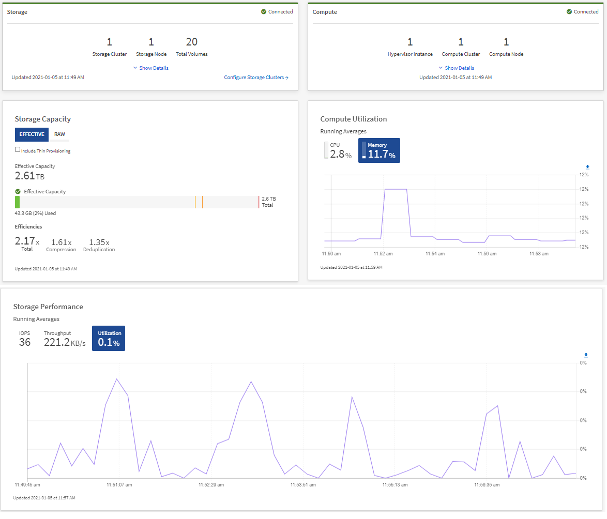
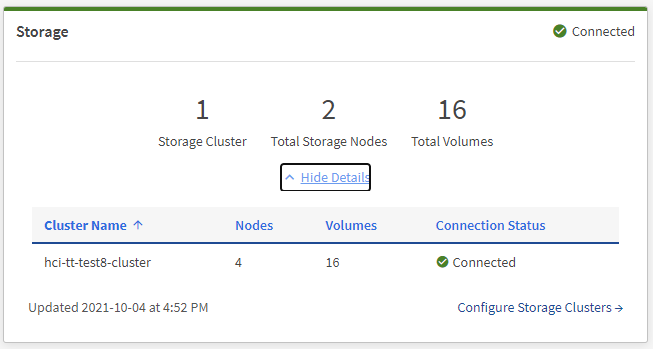
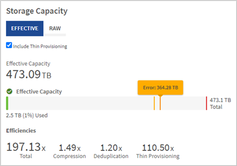
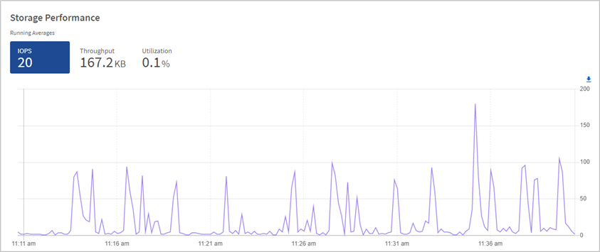
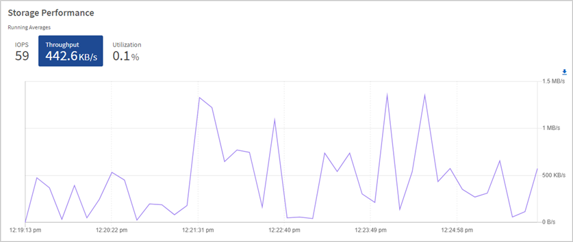
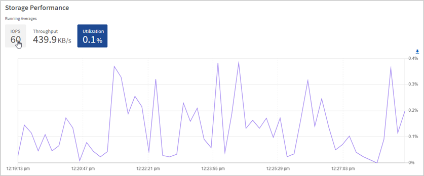
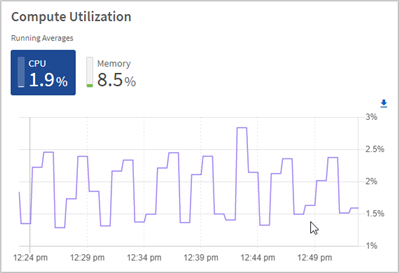

Solicitar cambios en el documento
Solicitar cambios en el documento Editar en GitHub
Editar en GitHub Guía del colaborador
Guía del colaboradorSupervise los recursos de almacenamiento y computación en la consola de control de cloud híbrido
Colaboradores
Con la consola de control del cloud híbrido de NetApp, puede ver todos sus recursos de almacenamiento y computación de un solo vistazo. Además, puede supervisar la capacidad de almacenamiento, el rendimiento del almacenamiento y el aprovechamiento de la computación.

|
Cuando inicia una nueva sesión de control del cloud híbrido de NetApp por primera vez, es posible que haya un retraso al cargar la vista de la consola de control del cloud híbrido de NetApp cuando el nodo de gestión gestiona muchos clústeres. El tiempo de carga varía en función del número de clústeres que gestiona el nodo de gestión activamente. Para lanzamientos posteriores, experimentará tiempos de carga más rápidos. |
Solo se muestran en la consola de control de cloud híbrido los nodos de computación que se gestionan y los clústeres con al menos un nodo gestionado en hardware H-Series.
Acceda a la consola HCC de NetApp
-
Abra la dirección IP del nodo de gestión en un navegador web. Por ejemplo:
https://<ManagementNodeIP>
-
Inicie sesión en NetApp Hybrid Cloud Control proporcionando las credenciales de administrador del clúster de almacenamiento de NetApp HCI.
-
Consulte la consola de control del cloud híbrido.


|
Puede que vea algunos o todos estos paneles, según su instalación. Por ejemplo, para instalaciones solo de almacenamiento, la consola de control de cloud híbrido muestra solo el panel almacenamiento, el panel capacidad de almacenamiento y el panel rendimiento de almacenamiento. |
Supervise los recursos de almacenamiento
Utilice el panel almacenamiento para ver su entorno de almacenamiento total. Es posible supervisar el número de clústeres de almacenamiento, los nodos de almacenamiento y el total de volúmenes.
Para ver los detalles, en el panel almacenamiento, seleccione Mostrar detalles.

|
|
El número total de nodos de almacenamiento no incluye nodos de testigos de clústeres de almacenamiento de dos nodos. Los nodos de testigos se incluyen en el número de nodos de la sección de detalles de ese clúster. |
|
|
Para ver los datos más recientes del clúster de almacenamiento, use la página Storage Clusters, donde el sondeo se produce con más frecuencia que en la consola. |
Supervise los recursos de computación
Utilice el panel Compute para ver su entorno informático total de NetApp H-Series. Es posible supervisar el número de clústeres de computación y el total de nodos de computación.
Para ver detalles, en los paneles computación, seleccione Mostrar detalles.
|
|
Las instancias de vCenter solo se muestran en el panel Compute cuando al menos un nodo de computación de NetApp HCI está asociado a esa instancia. Para enumerar las instancias de vCenter vinculadas en NetApp Hybrid Cloud Control, puede utilizar el "API". |
|
|
Para gestionar un nodo de computación en NetApp Hybrid Cloud Control, debe hacerlo "Añada el nodo de computación a un clúster de hosts de vCenter". |
Supervise la capacidad de almacenamiento
Supervisar la capacidad de almacenamiento del entorno es crucial. Mediante el panel capacidad de almacenamiento, puede determinar sus ganancias en eficiencia de la capacidad del almacenamiento con o sin funciones de compresión, deduplicación y thin provisioning habilitadas.
Puede ver el espacio de almacenamiento físico total disponible en su clúster en la ficha RAW e información sobre el almacenamiento aprovisionado en la ficha EFECTIVO.

|
|
Para ver el estado del clúster, también consulte la consola de SolidFire Active IQ. Consulte "Supervise el rendimiento, la capacidad y el estado del clúster en SolidFire Active IQ de NetApp". |
-
Seleccione la ficha RAW para ver el espacio de almacenamiento físico total utilizado y disponible en el clúster.
Observe las líneas verticales para determinar si la capacidad que ha utilizado es inferior al total o inferior a los umbrales de advertencia, error o crítico. Pase el ratón por las líneas para ver los detalles.
Puede establecer el umbral de Advertencia, que por defecto es 3% inferior al umbral de error. Los umbrales error y crítico están predefinidos y no se pueden configurar por diseño. El umbral de error indica que aún hay menos de un nodo de capacidad en el clúster. Para conocer los pasos para establecer el umbral, consulte "Configurar el umbral completo del clúster".
Para obtener más detalles sobre la API de Element de umbrales de clúster relacionados, consulte "“GetClusterFullThreshold”" En la documentación de la API del software Element. Para ver detalles sobre la capacidad de metadatos y bloques, consulte "Niveles de llenado de clústeres" En la documentación del software Element. -
Seleccione la ficha EFECTIVO para ver información sobre el almacenamiento total aprovisionado a los hosts conectados y para ver los índices de eficiencia.
-
Opcionalmente, compruebe incluir Thin Provisioning para ver las tasas de eficiencia de Thin Provisioning en el gráfico de barras de capacidad efectiva.
-
Cuadro de barras de capacidad efectiva: Observe las líneas verticales para determinar si la capacidad utilizada es inferior o inferior a los umbrales de advertencia, error o crítico. De forma similar a la ficha RAW, puede pasar el ratón por encima de las líneas verticales para ver los detalles.
-
Eficiencias: Examine estas calificaciones para determinar el aumento de la eficiencia de la capacidad de almacenamiento con las funciones de compresión, deduplicación y thin provisioning activadas. Por ejemplo, si la compresión se muestra como «1,3x», esto significa que la eficiencia del almacenamiento con compresión habilitada es 1.3 veces más eficiente que sin ella.
Las eficiencias totales son iguales a (factor de eficiencia maxUsedSpace *) / 2, donde efficiencyfactor = (thinProvisioningfactor * deDuplicationfactor * compressionfactor). Cuando no se selecciona thin provisioning, no se incluye en la eficiencia total. -
Si la capacidad de almacenamiento efectiva se acerca a un umbral de error o crítico, considere borrar los datos de su sistema. También puede ampliar el sistema.
Consulte "Visión general de la ampliación".
-
-
Para un análisis más profundo y un contexto histórico, mire "Detalles de SolidFire Active IQ de NetApp".
Supervise el rendimiento del almacenamiento
Puede ver cuántas IOPS o rendimiento puede obtener de un clúster sin superar el rendimiento útil de ese recurso mediante el panel rendimiento del almacenamiento. El rendimiento del almacenamiento es el punto en el que se obtiene la utilización máxima antes de que la latencia empeore.
El panel rendimiento del almacenamiento le ayuda a identificar si el rendimiento se está alcanzando el punto en el que el rendimiento podría degradarse si las cargas de trabajo aumentan.
La información de este panel se actualiza cada 10 segundos y muestra un promedio de todos los puntos del gráfico.
Para obtener detalles sobre el método API de Element asociado, consulte "GetClusterStats" Método en la documentación de la API del software Element.
-
Consulte el panel Storage Performance. Para obtener detalles, pase el ratón sobre los puntos del gráfico.
-
Pestaña IOPS: Consulte las operaciones actuales por segundo. Busque tendencias de datos o picos. Por ejemplo, si observa que el número máximo de IOPS es 160 000 y 100 000 de IOPS libres o disponibles, puede considerar la posibilidad de añadir más cargas de trabajo a este clúster. Por otro lado, si observa que solo 140K está disponible, puede considerar la descarga de cargas de trabajo o la ampliación del sistema.

-
Ficha de rendimiento: Patrones de monitor o picos de rendimiento. Además, supervise constantemente valores de rendimiento elevados, lo que podría indicar que se está acercando al rendimiento máximo útil del recurso.

-
Ficha utilización: Controlar la utilización de IOPS en relación con el total de IOPS disponibles resumido a nivel de clúster.

-
-
Para obtener más análisis, observe el rendimiento del almacenamiento mediante el complemento de NetApp Element para vCenter Server.
Supervise el uso de los recursos informáticos
Además de supervisar las IOPS y el rendimiento de los recursos de almacenamiento, quizás también desee ver el uso de la CPU y la memoria de sus activos de computación. El número total de IOPS que puede proporcionar un nodo depende de las características físicas del nodo; por ejemplo, el número de CPU, la velocidad de CPU y la cantidad de RAM.
-
Consulte el panel utilización de computación. Usando las pestañas CPU y memoria, busque patrones o picos de utilización. También busque un uso continuamente alto, que indica que podría estar cerca del uso máximo para los clústeres de computación.
Este panel muestra datos solo para los clústeres de computación que gestiona esta instalación. 
-
Pestaña CPU: Consulte el promedio actual de utilización de CPU en el cluster informático.
-
Ficha memoria: Consulte el uso medio actual de memoria en el cluster informático.
-
-
Para obtener más análisis sobre la información de computación, consulte "SolidFire Active IQ de NetApp para datos históricos".